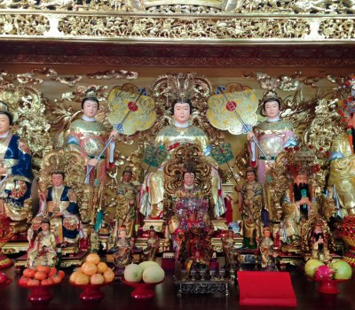

大殿Main Hall

本堂大殿間隔三才，中為無極聖殿，奉祀主神 無極瑤池大聖西王金母大天尊，飽滿豐實，眉慈目秀，神韻儼然，相貌慈祥，全身瀝粉貼金，在燈光映燦下，烘托出無窮的神感寶光，金母高居俯下，猶如一輪明月普照萬物生靈，時刻關心來此朝拜善信的吉凶命運，庇佑信眾平安，廣度有緣；右祀奉祀，玄穹高上帝玉皇赦罪賜福大天尊；左邊奉祀，無上虛空地母無量慈尊大慈尊。
龕前同祀觀音大士、關聖帝君、天上聖母、中壇元帥和福德正神等諸天聖賢仙佛，以鎮殿濟世，化育群黎。
At the center the principal deity, the Golden Mother of the Jasper Pool, is enshrined; to the right is the Jade Emperor and to the left the Earth Mother. Before the altar are Guanyin, Guan Di, Mazu, Marshal Zhongtan and the Earth God, among others.
- 無極瑤池大聖西王金母大天尊Golden Mother of the Jasper Pool
- 玉皇赦罪賜福大天尊Jade Emperor
- 無上虛空地母無量慈尊Earth Mother
- 觀音大士Guanyin
- 關聖帝君Guan Di
- 天上聖母Mazu
- 中壇元帥Marshal Zhongtan
- 福德正神Earth God